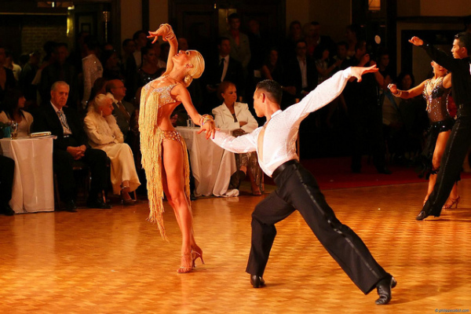

|  |
 |
 |
|

Спортивные (бальные) танцы - один из красивейших видов танцевальной и спортивной культуры. Пройдя длинный и нелегкий путь становления, бальный танец сумел очаровать весь мир своим непревзойденным чувством красоты, стиля и галантности. Сердца сотен тысяч людей полны любви к этому уникальному виду искусства.
В последние годы спортивные танцы пользуются все большой популярностью и получили огромное распространение во многих странах мира. Наша страна не является исключением, так как сотни ребят, школьников, студентов и взрослых людей хотят заниматься танцами.
Большое количество соревнований по спортивным танцам проводятся в нашей стране. Трижды в год проходят чемпионаты Республики Беларусь по спортивным бальным танцам среди всех возрастных групп, собирающие лучшие пары страны. Порядка 10 Первенств Республики Беларусь по различным классам проходят в течение танцевального сезона. Кроме этого очень популярны традиционные международные рейтинговые турниры, собирающие спортсменов и судей из ближнего и дальнего зарубежья.
Огромное количество преподавателей по всему миру работает над развитием современного бального танца, привнося в технику исполнения другие популярные направления танцевальных культур, такие как джаз-балет, классическая хореография, хип-хоп, брэйк данс, свинг, рок-н-ролл, хастл, сальса. В результате появляется многообразие и бесконечная возможность выразить себя и свои чувства на паркете, что делает танец особенно привлекательным.